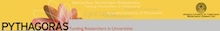

"Design of Integrated Circuits using T.F.T.s within the
framework "PYTHAGORAS: Study and Development of T.F.T.s
models – Design and Development of Li-ion batteries for
their supply"
Scientific Assistant
Funded by the Ministry of National Education and Religious
Affairs.
Aristotle University of Thessaloniki, Greece
Oct. 2004 - Sept. 2005